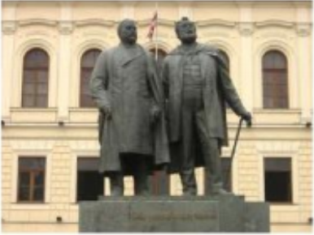

თბილისის კლასიკური გიმნაზია (უწინ თბილისის პირველი გიმნაზია და თბილისის პირველი საჯარო სკოლა), დაარსდა 1830 წელს ადრე არსებული (1804-იდან) კეთილშობილთა სასწავლებლის ბაზაზე. 20 წლის განმავლობაში ეს გიმნაზია იყო ვაჟთა ერთადერთი საერო საშუალო სასწავლებელი საქართველოში. მასთან არსებობდა პანსიონიც.
